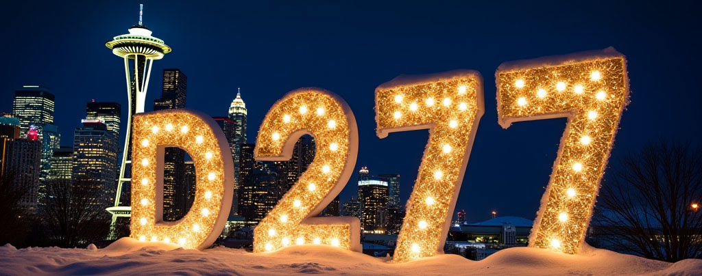
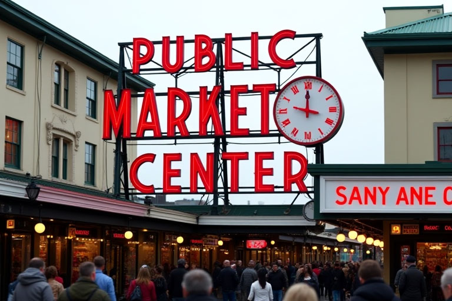

Seattle is the famouse center of Washington State, known around the world.

Nicknamed "The Emerald City" from the beautiful nature greenery that surrounds.

Creativity and innovation flows through the city. Home to world famous coffee, music legends, and some of the biggest tech companies.
From the Space Needle to the iconic Pike Place Market, Seattle offers unforgettable experiences.
Discovering Seattle
There’s more to Seattle beyond the surface. Under the known streets of the city lives a buried past, Seattle built ontop of streets of the past that live just below the surface today.
A powerhouse of a city with much to offer, a place to visit and a place to stay!